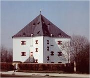

Letohrádek královny Anny (Belveder) na Pražském hradě vznikl podle návrhu italského architekta Paola della Stelly.

Dům v Telči vyzdobený sgrafity
|
RENESANČNÍ ČECHY
V Čechách se renesance prosazovala pomaleji, protože byly na začátku 15. stol. zmítány husitskými válkami. Pozdní gotiku Vladislavského sálu (Benedikt Rejt) na Pražském hradě už doplňují renesanční prvky. V 16. stol. vznikla řada renesančních skvostů – letohrádek královny Anny (Belveder) a Hvězda v Praze, zámky (Litomyšl, Červená Lhota, Nelahozeves, Velké Losiny, Opočno…), dochovala se historická centra měst (Telč, Slavonice, Dačice, Prachatice…). Některé renesanční památky se dostaly na prestižní seznam světového kulturního dědictví UNESCO (Litomyšl, Telč).
Za vlády Rudolfa II. (1576-1611) se centrum habsburské monarchie přesouvá do Prahy. Na jeho dvoře působila řada šarlatánů (Edward Kelley), vědců (Tycho de Brahe, Kepler) i umělců, například manýrističtí malíři Giuseppe Arcimboldo [džuzepe arčimboldo] (alegorie ročních dob a živlů), Hans von Achen nebo Bartoloměj Spranger. Rudolfovy rozsáhlé umělecké sbírky si odvezli Švédové jako válečnou kořist...
Od 15. stol. byly Čechy zemí dvou konfesí – utrakvistické a katolické. Stoupenci jiných vyznání (především jednoty bratrské) byli pronásledováni. Úplnou náboženskou svobodu zaručil až Rudolfův Majestát (1609).
|
Historie
Po odeznění husitských válek se Čechy stávají zemí dvojího lidu (utrakvistů a katolíků). Český král Jiří z Poděbrad (1458-1471), kterého si zvolily české stavy z vlastních řad, nedokázal vyvést zemi z izolace. Po vládě Jagellonců (1471-1526) nastupují na český trůn Habsburkové (1526-1918). Centrem jejich říše je Vídeň, a proto význam Prahy postupně klesá. Během třicetileté války (1618-1638) Čechy ztrácejí samostatnost a stává se z nich výhradně katolická země.

Pražský letohrádek Hvězda
|
Humanismus
Zprvu ojedinělé kontakty českých zemí s humanismem (Karel IV. si dopisoval s Petrarkou, Jiří z Poděbrad vyslal mírové poselstvo po evropských zemích) se postupně prohlubovaly.
První humanisté považovali češtinu za barbarský jazyk, a proto psali výhradně latinsky, ostatní naopak češtinu záměrně rozvíjeli.
|
Český humanismus
Český humanismus měl především vzdělavatelský ráz. První humanisté se věnovali hlavně překládání a psaní naučné literatury. Hynek z Poděbrad překládal Boccaccia. Řehoř Hrubý z Jelení přeložil Erasmovu Chválu bláznovství. Mikuláš Konáč z Hodiškova vydával první letákové noviny a napsal Pravidlo lidského života (překlad latinské verze indické Paňčatantry). Nejvýznamnější český humanista Viktorin Kornel ze Všehrd (1460-1520) přeložil Knihy o napravení padlého od Jana Zlatoústého, napsal původní spis O práviech, súdiech i o dskách země české knihy devatery a velice se zasloužil o rozvoj češtiny – manifest národního humanismu.
|
Latinský humanismus
Latinsky psal Bohuslav Hasištejnský z Lobkovic (O lidské bídě, O lakotě, velmi zajímavá je i jeho korespondence). Dubravius (Jan Skála z Doubravky) se nechal inspirovat Novou radou Smila Flašky z Pardubic k latinské zvířecí alegorii Theriobulia (Rada zvířat), kterou věnoval mladému králi Ludvíkovi Jagellonskému. Poezii psala básnířka Vestonie.
|
Jan Blahoslav (1523-1571)
Jan Blahoslav byl biskupem jednoty bratrské a působil především v Ivančicích. Je autorem překladu Nového zákona a pojednání Gramatika česká, Musica, Vady kazatelů, Spis o zraku, O původu jednoty bratrské a řádu v ní a Filipika proti misomusům.
|
Jan Blahoslav: Filipika proti misomusům
Jan Blahoslav nechtěl, aby se život v prostotě požadovaný jednotou bratrskou týkal rovněž vzdělanosti. Proto se rozhodl v latinské rozpravě Corollarium additum anno, známější pod názvem Filipika proti misomusům, obhájit důležitost vyššího vzdělání.
Proč je podle Jana Blahoslava vzdělání důležité?
Kdo jsou misomusové?
Co je filipika?
Jaký byl osud jednoty bratrské po roce 1620?
Které současné církve se hlásí k odkazu jednoty bratrské?
|
Jednota bratrská vznikla v roce 1457 v Kunvaldu. Tato církev vycházela z myšlenek Petra Chelčického, v jejím čele stál biskup, přísné požadavky chudoby a pohrdání vzděláním byly postupně opuštěny. Přestože její příslušníci byli pronásledováni, získala si mnoho vlivných přívrženců. Někteří členové vynikli v literární tvorbě (Karel starší ze Žerotína, Václav Budovec z Budova, biskupové Jan Blahoslav a Jan Amos Komenský). Významným počinem jednoty bratrské bylo vydání Bible kralické (1579-1594) a Kancionálu šamotulského a ivančického.
|
Václav Hájek z Libočan (†1553)
Šlechtic Václav Hájek z Libočan byl původně utrakvistickým farářem, ale později konvertoval ke katolictví, protože usiloval o výnosné úřady. Byl to člověk velmi ambiciózní a konfliktní. Neustále vedl nějaké spory a soudní pře. Proslul jako autor Kroniky české.
Dřevořez z Hájkovy kroniky
|
Václav Hájek z Libočan: Kronika česká
Kronika česká si získala velkou oblibu, přestože Hájkův výklad dějin je velmi nepřesný. Václav Hájek z Libočan se snažil každou událost přesně datovat. Jeho kronika začíná rokem 644 (příchod praotce Čecha) a končí rokem 1527 (korunovace Ferdinanda Habsburského). Hájek straní katolíkům a události, o kterých měl jen kusé informace, si svévolně domýšlel a přibarvoval.
|
Hájkova kronika
Hájek napsal sice velmi čtivé dílo (oceňoval ho např. Karel Hynek Mácha), ale historikové v čele s Gelasiem Dobnerem (1719-1790) podrobili Kroniku českou tvrdé kritice. V 16. století ovšem nebyly takové nároky na práci s prameny jako v době osvícenství a později. Např. na doprovodných dřevorytech k Hájkově kronice se objevují stejné portréty, přestože mají označovat jiné panovníky. Podobná praxe byla v době počátků knihtisku zcela běžná. Tiskaři tak snižovali celkové náklady na výrobu knihy...
O čem pojednává ukázka?
Je vylíčení události pravdivé?
|
|
Život i dílo Mikuláše Dačického z Heslova byly spjaty s Kutnou Horou. Bohatý šlechtic se stal symbolem renesančního kavalíra – byl velmi vzdělaný, ale zároveň proslul svým výstředním životem (častokrát se ocitl v šatlavě, např. za to, že v opilosti zabil člověka). Je autorem básnické sbírky Prostopravda a Pamětí – historicky velmi cenné kroniky sahající do roku 1626, ve které navázal na zápisky svého otce o dějinách vlastního rodu, Kutné Hory i Čech.
|
Mikuláš Dačický z Heslova: Prostopravda
Prostopravda je první česká básnická sbírka. Obsahuje básně vlastenecké, duchovní, didaktické, protipapežské i pijácké. Řada z nich má latinské názvy nebo obsahuje verše v latině.
|
Mikuláš Dačický z Heslova

|
Knížky lidového čtení
V Čechách i ve světě byly velmi oblíbenou četbou různé kratochvilné knihy, které nazýváme společným jménem knížky lidového čtení. Šlo většinou o převzaté látky a jejich umělecká ani jazyková úroveň nebyla nijak vysoká. K nejpopulárnějším textům patřila Trojánská kronika a příběhy o Enšpíglovi, Faustovi, Ezopovi nebo Meluzíně. V Čechách to byli Štilfrid, Bruncvík a Paleček. Zájem o podobnou tvorbu trval až do 19. stol.
Znáš další postavy podobné Palečkovi? Zkus je porovnat.
|
Historií dvanácte o bratru Janu Palečkovi
Rytíř Jan Paleček byl šaškem krále Jiřího z Poděbrad, šlo tedy o historickou postavu. Tento člen jednoty bratrské se stal hlavní postavou českých facetií (veselých příběhů), ve kterých se zastává obyčejných lidí. Stejně jako Ezop nebo Enšpígl dosáhne vždy svého díky vlastní chytrosti.
|

Historií dvanácte o bratru Janu Palečkovi
|
Cestopisy
Překlady cestopisných knih byly velmi oblíbené už ve středověku (Polo, Mandeville). Od 15. stol. k nim přibývají i původní cestopisy českých autorů.
Srovnej staročeské cestopisy. Co mají společného a v čem se liší?
Jak se změnily země, které staří Čechové navštívili?
|
Cestopisy
Putování poslů krále Jiřího z Poděbrad po Evropě zachytil Václav Šašek z Bířkova (Deník o jízdě a putování pana Lva z Rožmitálu a z Blatné z Čech až na konec světa) a panoš Jaroslav. Jeruzalém navštívili Jan Hasištejnský z Lobkovic (Putování léta Páně 1493 k Svatému hrobu vykonaném), Martin Kabátník (Cesta z Čech do Jeruzaléma a Egypta), Oldřich Prefát z Vlkanova (Cesta z Prahy do Benátek a odtud potom po moři až do Palestyny...) a Kryštof Harant z Polžic a Bezdružic (Cesta z Království českého do Benátek, odtud po moři do země Svaté, země Judské a dále až do Egypta). Zážitky z věznění v Cařihradě popsal Václav Vratislav z Mitrovic (Příhody).
|
Texty cestopisů
Kryštof Harant z Polžic a Bezdružic: Cesta z Království českého do Benátek, odtud po moři do země Svaté, země Judské a dále až do Egypta
Oldřich Prefát z Vlkanova: Cesta z Prahy do Benátek a odtud potom po moři až do Palestyny...
Václav Vratislav z Mitrovic: Příhody
Bedřich z Donína: Cestopis
|
Knihtisk v Čechách

Trojánská kronika byla zřejmě nejstarším českým prvotiskem.
|
Knihtisk v Čechách
Nejstarším českým prvotiskem je zřejmě Trojánská kronika (70. léta 15. stol.) z plzeňské tiskárny. Do roku 1500 postupně vznikly další tiskařské dílny v Brně, Praze, Kutné Hoře a Olomouci. Po nezdařeném stavovském povstání v roce 1547 nechal král Ferdinand I. většinu tiskáren zavřít. V Praze zbyla pouze dílna Bartoloměje Netolického, kterou převzal Jiří Melantrich z Aventýna. Jeho zeť Daniel Adam z Veleslavína (1546-1599) byl univerzitním mistrem, nakladatelem, tiskařem i autorem (Kalendář historický). V době národního obrození se stala jeho knižní produkce nejvyšším ideálem (veleslavínská čeština). Dalším vzorem českých obrozenců byla Bible kralická, která vznikla na půdě jednoty bratrské v letech 1579 až 1594. Její základ tvořil překlad Nového zákona z pera Jana Blahoslava. Protože se tato šestidílná Bible používala v mnoha rodinách, stal se její jazyk všeobecnou normou. Pravopis, který se používal v této době, nazýváme bratrský.
|

|
Internetové stránky
UNESCO, Litomyšl, Telč...
Daniel Adam z Veleslavína
Jan Blahoslav
Mikuláš Konáč z Hodiškova
Viktorin Kornel ze Všehrd
Exkurze
Obrazárna Pražského hradu, Díla ze sbírek Rudolfa II., císaře Ferdinanda III., arcivévody Leopolda Viléma
Strahovský klášter, rudolfínské umění
Renesanční zámky
Památník Bible kralické
Filmy
Cech panen kutnohorských, režie O.Vávra

Litomyšlský zámek
|
Doporučená četba
Dačický z Heslova, Mikuláš: Prostopravda, Paměti
Deník rudolfínského dvořana, Adam mladší z Valdštejna 1602-1633, Argo, Praha 1997
Dubravius, Jan: Theriobulia, přel. Horna, Petrů, Praha 1983
Fortunatus, Academia, Praha 1970
Hájek z Libočan, Václav: Kronika česká, Odeon, Praha 1981
Hiršal, Kolář: Paleček krále Jiřího
Historia o životu doktora Jana Fausta
Jak staří Čechové poznávali svět, Vyšehrad, Praha 1986
Janáček, Josef: Jan Blahoslav, Rudolf II. a jeho doba, Ženy české renesance
Jirásek, Alois: Husitský král
Jirásek, A.: Z Čech až na konec světa
Kopecký, Milan: Český humanismus, Praha 1988
Kopecký, M.: Daniel Adam z Veleslavína
Kratochvilné rozprávky renesanční, Československý spisovatel, Praha 1952
Kubka, František: Palečkův úsměv a pláč
Macek, Josef: Jagellonský věk v českých zemích (4 díly)
Macek, Josef: Jiří z Poděbrad, Praha 1967
Moudří blázni, převyprávěl E.Frynta, Albatros, Praha 1984
Petrů, Eduard: Vzrušující skutečnost, Fakta a fantazie ve středověké a humanistické literatuře, Profil, Ostrava 1984
Pražák, Emil: Řehoř Hrubý z Jelení, Praha 1964
Rejchrtová, Noemi: Václav Budovec z Budova
Rukověť humanistického básnictví (5 dílů)
Studená, Věra: Vestonie, Aventinum, Praha 1946
Sviták, Ivan: Malostranská Sapfo, Opožděná recenze díla Elizabethy Johanny Westonové, 1582-1612, 1994
Tři knížky lidového čtení, Meluzína, Magelona, Jenovefa, NLN, Praha 2000
Václavek, Bedřich: Historie utěšené a kratochvilné, Družstevní práce, Praha 1941
|
Připrav si referát o některé z uvedených knih nebo internetových stránek.

Renesanční zámek Červená Lhota

Arcimboldo: Vertumnus
Zjisti, kdo byl Vertumnus.
|
|